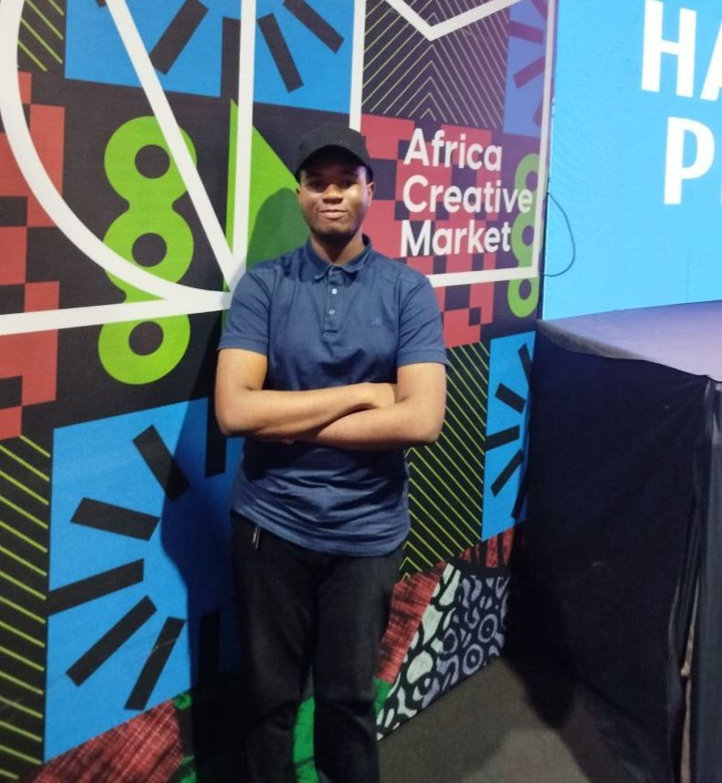

About Me
The mind behind the 'Monarch' title.
Hello, I'm Akinseloyin Elijah Oluwademilade.
You can also call me Monarch. I am a passionate and driven student currently pursuing a degree in Computer Engineering at the prestigious University of Lagos (UNILAG).
My core interests lie in the backbone of technology. I am deeply immersed in the worlds of:
- Network Engineering
- System Administration
- IT Support
My goal is to build and maintain the robust, secure, and efficient systems that power our digital world.
Download My CV
